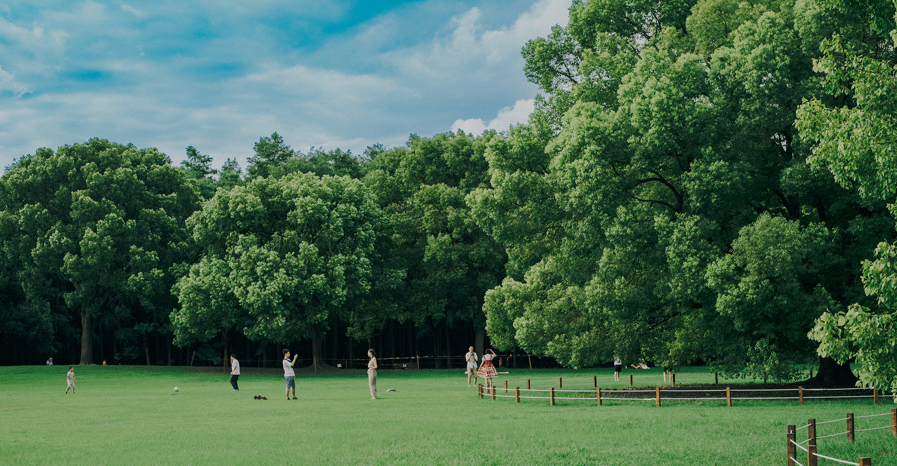
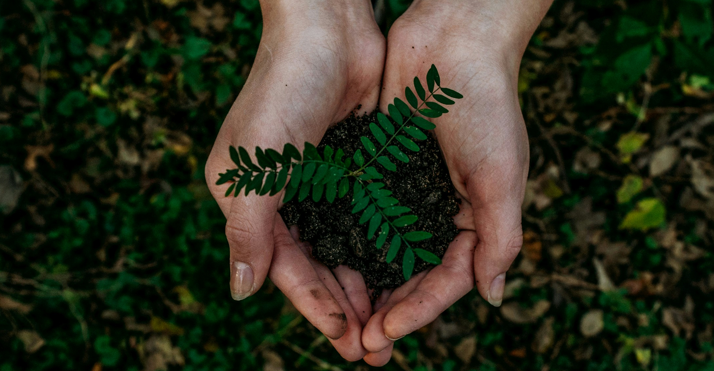

팝업
-

산불피해지 산림복원 기금 모금
2025년 대형산불로 사라진
숲의 복원에 함께해주세요
모금함 바로가기
-
언제나 어디서나 누구나 일상에서 만나는 숲
생명의숲은 시민의 힘으로 건강한 숲,
지속가능한 사회를 만듭니다.
모금함 바로가기
-

#같이가치 #매달기부
누구나 일상에서 건강한 숲을 누리도록
도시 속 나무심기
모금함 바로가기
-
나무 할아버지 박상진 교수의
우리가 지켜야할
고목나무 이야기
모금함 바로가기
-------------- footer 처럼 높이를 낮게 설정할 요소는 클래스명 fp-auto-height 추가
 언제나 어디서나 누구나 일상에서 만나는 숲
언제나 어디서나 누구나 일상에서 만나는 숲